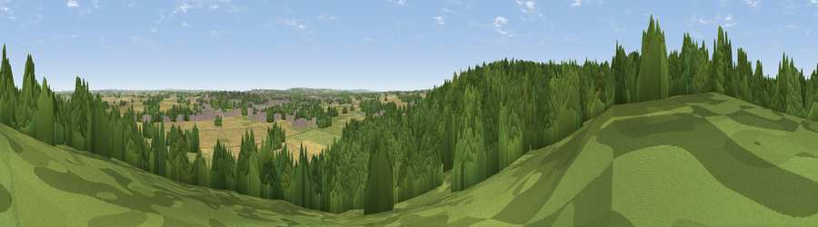

Viewpoint near Hopwas
#31477 in England · top 56% of its area beats it · near HopwasWhere it is
The exact computed spot (SK 17775 05875). Click the marker for map links.
The view, rendered

A 360° render of this exact spot computed from the terrain model, tree cover and land cover — summer colours, afternoon light, calibrated against photographs of famous viewpoints. Real trees, hedges and buildings will differ in detail.
The panorama
Grey silhouette: terrain skyline in each direction (720 bearings, Earth curvature and refraction included). Dashed green: skyline with trees (+15 m) and buildings (+8 m) as obstacles. Blue strip: how far the ground is visible on each bearing.
Where the view opens
Wedge length = distance to the farthest visible ground on that bearing (vegetation-aware). Rings at 10, 25 and 50 km.
What fills the view
54% woodland · 23% cropland · 18% grassland · 4% built-up
Angular shares of the visible panorama (visual magnitude), not map area. Landscape diversity 0.50 (0–1 Shannon).
Key numbers
More beautiful places nearby
The staircase of upgrades: each row has a higher view potential than everything closer. Driving times are estimates from straight-line distance, calibrated against real road routing — check an actual route before setting out.
| Place | Direction | Drive | Score |
|---|---|---|---|
| Viewpoint near Hopwas | SW · 2 km | ~5 min | 56.0 |
| Viewpoint near Hopwas | SSW · 2 km | ~6 min | 57.8 |
| Viewpoint near Streetly | SW · 14 km | ~26 min | 69.5 |
| Viewpoint near Stanton under Bardon | ENE · 29 km | ~46 min | 76.0 |
| Viewpoint near Woodhouse Eaves | ENE · 34 km | ~52 min | 77.7 |
| The Ercall | W · 53 km | ~75 min | 79.4 |
| Viewpoint near Little Wenlock | W · 54 km | ~76 min | 84.2 |
| The Wrekin | W · 55 km | ~77 min | 85.0 |
52.65032, -1.73870 · source: screening · position refined by local search. Computed location — check access rights before visiting.